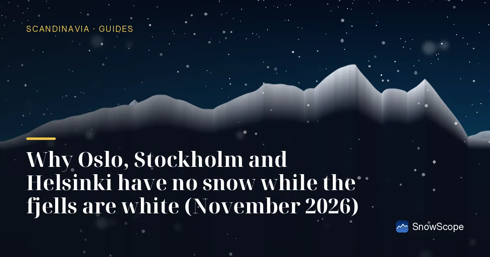
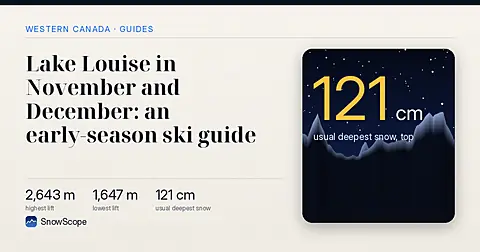

Why Oslo, Stockholm and Helsinki have no snow while the fjells are white (November 2026)
If you live in Oslo, Stockholm or Helsinki, mid-November looks grey and wet. Two or three hours inland it can be full winter. On the morning of 13 November the official station in central Stockholm measured 0 cm of snow, and so did the one in central Helsinki. At the same time Sälen in western Dalarna measured 45 cm, and Umeå, right on the coast of the Gulf of Bothnia, had 20 cm. In Oslo the station at Blindern, at 97 m, measured 4 cm, while Tryvannshøgda, only 5 km away but at 528 m, measured 37 cm. Norway's national snow map estimates about 25 cm at 1404 m in the mountains above Hemsedal. Here is why the same week gives you puddles in town and powder on the fjell.
See the live snow forecast for Scandinavia in the SnowScope appSnow depth, powder alerts and the 3D map, free.

Four pairs from the same morning
Stockholm 0 cm, Sälen 45 cm. The city station sits at 43 m next to the sea; Sälen sits at 364 m in the forest, a long way from open water. The day before Sälen had only 11 cm, so most of it came in one night.
Helsinki 0 cm, Rovaniemi 7 cm. The capital is at sea level on the Gulf of Finland, Rovaniemi airport is at 186 m on the Arctic Circle.
Karlstad 0 cm, Malungsfors 21 cm. Both lie in west-central Sweden. Karlstad lies at 49 m on the shore of Lake Vänern; Malungsfors at 321 m up the Västerdal river.
Blindern 4 cm, Tryvannshøgda 37 cm. This is the cleanest pair of all: both stations are in Oslo, 5 km apart, and the only real difference is 431 m of height. Bjørnholt in the forest of Nordmarka, at 360 m, had 31 cm.
Reason one: height
Air gets colder as you go up. In the standard atmosphere it cools by about 6.5 °C for every kilometre. That does not sound much, but in November the air near the ground is often just above zero in the lowlands. A few hundred metres higher it is just below zero, and the same rain shower lands as snow.
You can see this in the Swedish stations. Between 60 and 62 degrees north, 15 of the 17 stations between 150 and 400 m had snow on 13 November, with a middle value of 15 cm. Of the 17 stations below 150 m in the same band, only 3 had any.
Reason two: the sea is still warm
In November the Baltic, the Gulf of Bothnia and the North Sea still hold some summer heat. Air that blows over open water picks up that warmth, so the coast gets rain while the forest inland gets snow. Oslo, Stockholm, Göteborg, Helsinki and Bergen are all sea cities.
South of 60 degrees north, only 22 of the 145 low Swedish stations had snow on 13 November. In southern Finland, 5 of 51 low stations had snow. The city itself adds a little more warmth: streets, buildings and traffic keep the ground a bit warmer, and the first thin snow melts there first.
Reason three: where the storm went
Height and the sea are not the whole story. Umeå is at 10 m on the coast and had 20 cm, because a band of snow crossed northern Sweden. Kiruna is at 519 m and had 0 cm, because that band missed it. Between 62 and 64 degrees north, 10 of the 11 low Swedish stations had snow. So one storm track can beat all the other rules for a week.
What 46 winters say about mid-November
Our snow history over the last 46 winters gives the same picture. On 14 November, Oslo (at about 94 m) has snow on the ground in 43 % of winters, with a middle value of 1 cm. Stockholm has snow on that day in 25 % of winters, Helsinki in 29 %. High above Hemsedal, at 1400 m, the ground is white on 14 November in every one of the 46 winters, and the middle depth is 62 cm.
The cities catch up later. By 15 January the usual depth is 28 cm in Oslo, 13 cm in Helsinki and 5 cm in Stockholm. In Göteborg and Bergen, even mid-January is usually bare or close to it.
Tips for skiers
- Want a white weekend in November? Look inland and up: 300 to 500 m and away from the coast usually beats a city park.
- Fresh snow in Dalarna or Härjedalen can melt fast if mild air and rain follow. Look at the forecast for the next days, not only today's depth.
- In the city, the first snow often lasts only a day or two. Lit ski trails in the hills around Oslo, Stockholm and Helsinki get white before the streets do.
References and credits
- SMHI, open data: meteorological observations, snow depth www.smhi.se/data/meteorologi/ladda-ner-meteorologiska-observationer
- Finnish Meteorological Institute, open data en.ilmatieteenlaitos.fi/open-data
- seNorge, Norway's national snow map (NVE and MET Norway) www.senorge.no/
- NVE, open data and APIs (GridTimeSeries), NLOD licence www.nve.no/om-nve/apne-data-og-api-fra-nve/
- Wikipedia, Lapse rate (standard atmosphere), read 2026-11-13 en.wikipedia.org/wiki/Lapse_rate
- MET Norway, station observations (CC BY 4.0), daily reports as published by Ogimet www.ogimet.com/
About these numbers
Measured snow depth: daily readings from the official weather stations of Sweden (SMHI open data) and Finland (FMI open data, CC BY 4.0), morning of 13 November 2026. Norway: morning station reports of MET Norway (CC BY 4.0, as published by Ogimet); the Hemsedal figure is from the national snow map seNorge (NVE and MET Norway, open data under NLOD), an estimate on a 1 km grid. Snow history: SnowScope's 46 past winters (1980-81 to 2025-26), a model of the past corrected for height. Lapse rate: standard atmosphere.
Cite this report
For research, teaching or the press: the numbers and charts are free to reuse under CC BY 4.0 with this citation.
SnowScope (2026), Why Oslo, Stockholm and Helsinki have no snow while the fjells are white (November 2026), https://snowscope.app/blog/en/2026/11/why-nordic-cities-have-no-snow-while-the-mountains-do-2026.html, accessed 2026-11-14
SnowScope (Atlas Labs). (2026, November 14). Why Oslo, Stockholm and Helsinki have no snow while the fjells are white (November 2026). SnowScope snow reports. https://snowscope.app/blog/en/2026/11/why-nordic-cities-have-no-snow-while-the-mountains-do-2026.html
BibTeX
@misc{snowscope2026whynordiccitieshavenosno,
author = {{SnowScope (Atlas Labs)}},
title = {Why Oslo, Stockholm and Helsinki have no snow while the fjells are white (November 2026)},
year = {2026},
month = nov,
howpublished = {\url{https://snowscope.app/blog/en/2026/11/why-nordic-cities-have-no-snow-while-the-mountains-do-2026.html}},
note = {Published 2026-11-14 15:59 UTC; accessed 2026-11-14}
}· CC BY 4.0 · Methods, data and tools →
Follow Scandinavia
Free: a message when fresh snow is coming, and the forecast every morning.
More snow reports

Skiing Lake Louise early in the season: why it starts early, what November and December snow usually looks like in 46 past winters, and how to ski thin early cover.

Big Sky, Montana, made easy to picture: 5,850 acres under Lone Peak, and snow that is about five times deeper near the top than at the base in 46 past winters.

Baqueira-Beret sits in the Val d'Aran, on the Atlantic side of the Pyrenees. What that means for its snow, tested with 46 past winters against La Molina, and when to go.